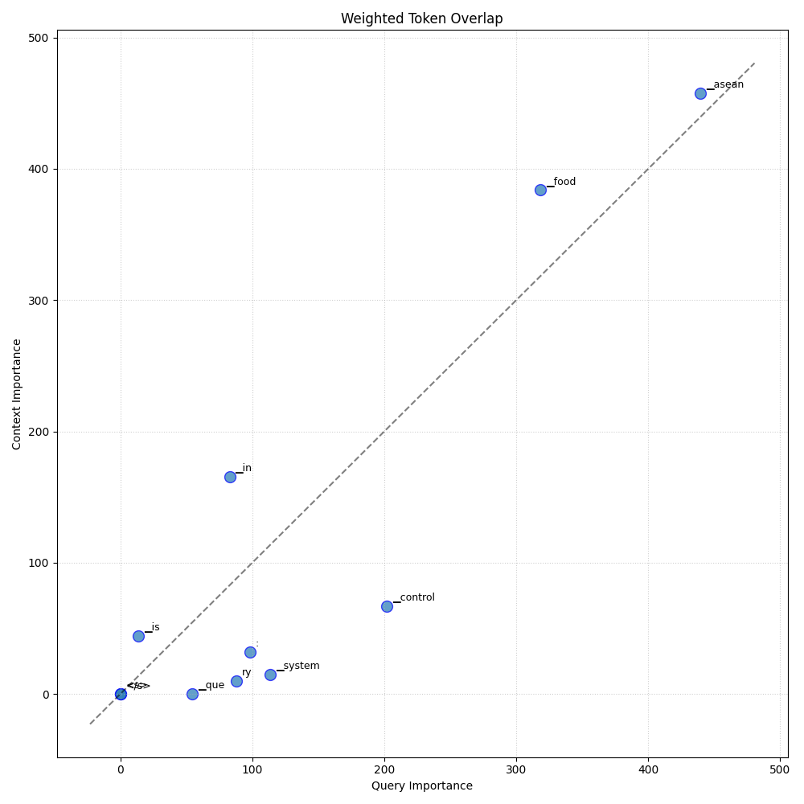

Analysis: query_94
Query: ▁que ry : ▁What ▁is ▁food ▁control ▁system ▁in ▁ASEAN ?
Document Relevance

Weighted Overlap

Token Comparison

Documents
Document 1 (Click to Expand)
▁The ▁first ▁version ▁of ▁the ▁current ▁document ▁was ▁developed ▁by ▁the ▁Pre par ed ▁Food st uff ▁Product ▁Work ing ▁Group ▁( PF P WG ) ▁and ▁en dors ed ▁by ▁ASEAN ▁Consulta tive ▁Committee ▁for ▁Standard s ▁and ▁Quality ▁( AC CS Q ) ▁in ▁2006 ▁Re cogni zing ▁that ▁the ▁ASEAN ▁Trade ▁in ▁Good s ▁Agreement ▁that ▁was ▁conclude d ▁in ▁2009 ▁requires ▁Member ▁States ▁to ▁be ▁guide d ▁by ▁international ▁standard s ▁in ▁implement ing ▁their ▁Sanitar y ▁and ▁Ph yt osan ita ry ▁measure s , ▁and ▁the ▁require ment ▁of ▁the ▁ASEAN ▁Policy ▁Guide line ▁for ▁Standard ▁and ▁Conform ance ▁to ▁adopt ▁international ▁standard s , ▁a ▁review ▁of ▁the ▁first ▁version ▁of ▁the ▁“ ASE AN ▁Common ▁Princip les ▁for ▁Food ▁Control " ▁was ▁under tak en ▁by ▁the ▁ PF WG . ▁The ▁P FP WG ▁has ▁decided ▁to ▁revi se ▁the ▁document ▁to ▁ align ▁C AC / GL ▁82 -2013 ▁Princip les ▁and ▁guidelines ▁for ▁national ▁food ▁control ▁systems . ▁This ▁document ▁revi ses ▁and ▁replace s ▁the ▁ASEAN ▁Common ▁Princip les ▁for ▁Food ▁Control : ▁2006 The ▁document ▁is ▁an ▁ adoption ▁of ▁C AC / GL ▁82 -2013 ▁Princip les ▁and ▁guidelines ▁for ▁national ▁food ▁control ▁systems ▁published ▁by ▁the ▁Code x ▁Alimenta rius ▁Commission ▁with ▁the ▁following ▁modification : C laus e ▁/ ▁Sub cla use Mod ification 1 ▁Introdu ction ▁Add ▁1 a ▁Definition s ' Food ' ▁means ▁any ▁substance , ▁whether ▁process ed , ▁semi process ed ▁or ▁raw . ▁which ▁is ▁intended ▁for ▁human ▁consum p tion , ▁and ▁includes ▁drink s , ▁che wing ▁gum ▁and ▁any ▁substance ▁which ▁has ▁been ▁used ▁in ▁the ▁manufacture , ▁preparation ▁or ▁treatment ▁of ▁food ' ▁but ▁does ▁not ▁include ▁cosmetic s ▁or ▁to ba cco ▁or ▁substance s ▁used ▁only ▁as ▁drugs Ex plan ation : ▁A ▁Definition ▁for ▁" Food " ▁has ▁been ▁included ▁in ▁order ▁to ▁establish ▁a ▁common ▁interpretation ▁of ▁the ▁ scope ▁of ▁application ▁of ▁the ▁princip les ▁and ▁guidelines This ▁document ▁is ▁one ▁of ▁the ▁ASEAN ▁Common ▁Food ▁Control ▁Re qui re ments ▁( AC F CR ) Jul y ▁2014 21 PF P WG ▁M RA ▁ ANNE X ▁1 ASE AN ▁COM MON ▁PRI NC IP LES ▁AND ▁GU IDE LINE S ▁FOR ▁F OOD ▁ CONT ROL ▁SY STEM SSE C TION ▁1 ▁ INT ROD UC TION 1 . ▁This ▁document ▁is ▁In tende d ▁to ▁provide ▁practical ▁guidance ▁to ▁assist ▁the ▁national ▁government , ▁and ▁their ▁ competent ▁authority ' ▁in ▁the ▁design , ▁development , ▁operation , ▁evaluation ▁and ▁improvement ▁of ▁the ▁national ▁food ▁control ▁system ▁It ▁highlight s ▁the ▁key ▁princip les ▁and ▁core ▁elements ▁of ▁an ▁efficient ▁and ▁effective ▁food ▁control ▁system . ▁It ▁is ▁not ▁intended ▁that ▁the ▁guidance ▁results ▁in ▁“ one ▁system ” ▁being ▁appropriate ▁to ▁all ▁circumstances ▁Rath er , ▁various ▁approach es ▁may ▁be ▁used , ▁as ▁appropriate ▁to ▁the ▁national ▁circumstances , ▁to ▁achieve ▁an ▁effective ▁national ▁food ▁control ▁system 2. ▁While ▁the ▁focus ▁of ▁the ▁Princip les ▁and ▁Guide lines ▁for ▁National ▁Food ▁Control ▁Systems ▁is ▁on ▁the ▁production , ▁pack ing , ▁storage , ▁transport , ▁handling ▁and ▁sale ▁of ▁food s ▁within ▁national ▁border s , ▁the ▁document ▁is ▁consistent ▁with ▁and ▁should ▁be ▁read ▁in ▁con jun ction ▁with ▁relevant ▁Code x ▁text s .
Document 2 (Click to Expand)
▁# ▁FA O ▁Help s ▁Im prove ▁Food ▁Safety ▁in ▁ASEAN ▁The ▁Food ▁and ▁Agri culture ▁Organization ▁of ▁the ▁United ▁Nations ▁( FA O ) ▁has ▁improve d ▁consumer ▁health ▁and ▁boost ed ▁the ▁trade ▁of ▁food ▁in ▁South e ast ▁Asia ▁through ▁a ▁series ▁of ▁multi - year ▁projects ▁ . ▁The ▁projects ▁were ▁fund ed ▁by ▁the ▁government ▁of ▁Japan ▁and ▁ai med ▁at ▁capacity ▁building ▁to ▁develop ▁and ▁implement ▁international ▁food ▁safety ▁standard s ▁in ▁member ▁countries ▁of ▁the ▁Association ▁of ▁South e ast ▁Asian ▁Nations ▁( ASE AN ). ▁ASEAN ' s ▁member ▁countries ▁include ▁Brun ei ▁Dar us salam , ▁Cambodia , ▁Indonesia , ▁Lao ▁People ’ s ▁Democratic ▁Republic , ▁Malaysia , ▁Myanmar , ▁the ▁Philippines , ▁Singapore , ▁Thailand , ▁and ▁Vietnam . ▁With in ▁the ▁region , ▁capacity ▁levels ▁var y ▁wide ly ▁and ▁food ▁culture s ▁are ▁diverse , ▁leading ▁to ▁various ▁food ▁safety ▁issues . ▁Many ▁consumer s ▁in ▁these ▁countries ▁prefer ▁street ▁food . ▁Harmoni zing ▁food ▁safety ▁measure s ▁with ▁Code x ▁Alimenta rius ▁standard s ▁can ▁help ▁min imize ▁trade ▁restriction s , ▁official s ▁say . ▁More ▁than ▁14 ▁training ▁courses ▁were ▁held ▁between ▁2016 ▁and ▁2019 ▁to ▁strength en ▁capacity ▁to ▁contribute ▁to ▁the ▁Code x ▁standard - setting ▁process ▁and ▁implement ▁adopt ed ▁standard s . ▁There ▁was ▁a ▁need ▁to ▁focus ▁on ▁genera ting ▁evidence ▁on ▁food ▁safety ▁hazard s ▁and ▁their ▁level ▁of ▁risk ▁for ▁consumer s . ▁The ▁courses ▁covered ▁topic s ▁such ▁as ▁inspect ion ▁systems , ▁food ▁recall s ▁and ▁trace ability , ▁my co to xin ▁sa mp ling ▁tools , ▁establish ing ▁maximum ▁residu es ▁limit s , ▁and ▁sanitar y ▁and ▁ phy tos an ita ry ▁measure s . ▁Results ▁have ▁contribute d ▁to ▁improving ▁consumer ▁health , ▁facilita ting ▁food ▁trade , ▁and ▁better ▁collaboration ▁between ▁ASEAN ▁and ▁trading ▁partners ▁such ▁as ▁Japan . ▁ASEAN ▁countries ▁have ▁also ▁gain ed ▁knowledge ▁on ▁issues ▁such ▁as ▁risk ▁analysis ▁and ▁categori z ation . ▁In ▁addition , ▁effective ▁and ▁harmoni zed ▁food ▁safety ▁capac ities ▁support ▁increased ▁trade ▁of ▁food ▁and ▁agricultura l ▁products .
Document 3 (Click to Expand)
▁# ▁ASEAN ▁Sector al ▁Mutu al ▁Re cogni tion ▁Ar rang ement ▁for ▁In spec tion ▁and ▁Certifica tion ▁Systems ▁on ▁Food ▁Hy gi ene ▁for ▁Pre par ed ▁Food st uff ▁Products ▁## ▁ASEAN ▁Sector al ▁Mutu al ▁Re cogni tion ▁Ar rang ement ▁for ▁In spec tion ▁and ▁## ▁Certifica tion ▁Systems ▁on ▁Food ▁Hy gi ene ▁for ▁Pre par ed ▁Food st uff ▁Products ▁The ▁ASEAN ▁Secretaria t ▁Jakarta ▁The ▁Association ▁of ▁South e ast ▁Asian ▁Nations ▁( ASE AN ) ▁was ▁established ▁on ▁8 ▁August ▁1967 . ▁The ▁Member ▁States ▁of ▁the ▁Association ▁are ▁Brun ei ▁Dar us salam , ▁Cambodia , ▁Indonesia , ▁Lao ▁P DR , ▁Malaysia , ▁Myanmar , ▁Philippines , ▁Singapore , ▁Thailand ▁and ▁Viet ▁Nam . ▁The ▁ASEAN ▁Secretaria t ▁is ▁based ▁in ▁Jakarta , ▁Indonesia . ▁For ▁in qui ries , ▁contact : ▁The ▁ASEAN ▁Secretaria t ▁Community ▁Relation s ▁Division ▁( CR D ) ▁70 A ▁Jalan ▁Si sing aman gara ja ▁Jakarta ▁12 110 ▁Indonesia ▁Phone : ▁( 62 ▁21 ) ▁7 24 -3 372 , ▁7 26 -29 91 ▁Fax : ▁( 62 ▁21 ) ▁ 739 - 82 34 , ▁7 24 -35 04 ▁E - mail : ▁public @ ase an . org ▁Catalog ue - in - Public ation ▁Data ▁ASEAN ▁Sector al ▁Mutu al ▁Re cogni tion ▁Ar rang ement ▁for ▁In spec tion ▁and ▁Certifica tion ▁Systems ▁on ▁Food ▁Hy gi ene ▁for ▁Pre par ed ▁Food st uff ▁Products ▁Jakarta : ▁ASEAN ▁Secretaria t , ▁August ▁2018 ▁36 3.1 92 59 ▁1. ▁ASEAN ▁- ▁Food ▁Safety ▁- ▁M RA ▁2. ▁Food ▁Hy gi ene ▁- ▁Pre par ed ▁Food ▁II S BN ▁978- 60 2 -5 798 -12- 2 ▁ASEAN : ▁A ▁Community ▁of ▁Op portu ni ties ▁The ▁text ▁of ▁this ▁publication ▁may ▁be ▁free ly ▁quote d ▁or ▁re print ed , ▁provided ▁proper ▁acknowledge ment ▁is ▁given ▁and ▁a ▁copy ▁contain ing ▁the ▁re print ed ▁material ▁is ▁sent ▁to ▁the ▁Community ▁Relation s ▁Division ▁( CR D ) ▁of ▁the ▁ASEAN ▁Secretaria t , ▁Jakarta . ▁General ▁information ▁on ▁ASEAN ▁appears ▁online ▁at ▁the ▁ASEAN ▁Website : ▁www . ase an . org ▁Copyright ▁Association ▁of ▁South e ast ▁Asian ▁Nations ▁( ASE AN ) ▁2018. ▁All ▁rights ▁reserved . ▁mail to : public @ ase an . org ▁http :// www . ase an . org ▁## ▁ASEAN ▁SEC TOR AL ▁MU TUAL ▁REC OG NI TION ▁## ▁ ARRA NG EMENT ▁FOR ▁IN SPEC TION ▁AND ▁## ▁CER TI FIC ATION ▁SY STEM S ▁ON ▁F OOD ▁HY GI ENE ▁FOR ▁PRE PA RED ▁F OOD STU FF ▁ PRODUCT S
Document 4 (Click to Expand)
▁# ▁ASEAN ▁PRI NC IP LES ▁AND ▁GU IDE LINE S ▁FOR ▁N ATION AL ▁F OOD ▁ CONT ROL ▁SY STEM S ▁82 -2013 PF P WG , ▁MOD ) ▁3-4 ▁th ▁## ▁September ▁2014, ▁Yang on , ▁Myanmar ▁## ▁th ▁3-4 ▁( CA C / GL ▁ASEAN ▁PRI NC IP LES ▁AND ▁GU IDE LINE S ▁FOR ▁N ATION AL ▁F OOD ▁ CONT ROL ▁SY STEM S ▁82 -2013 ▁: ▁A ▁Definition ▁for ▁“ Food ” ▁has ▁been ▁included ▁in ▁order ▁to ▁establish ▁a ▁common ▁interpretation ▁of ▁the ▁ scope ▁of ▁application ▁of ▁the ▁princip les ▁and ▁guidelines . PF P WG , ▁July ▁2014 ▁3-4 ▁th ▁September ▁2014, ▁Yang on , ▁Myanmar ▁th ▁3-4 ▁82 -2013 ▁FOR EW ORD ▁Princip les ▁and ▁guidelines ▁for ▁national ▁food ▁control ▁systems . ▁This ▁document ▁revi ses ▁and ▁replace s ▁the ▁ASEAN ▁Common ▁Princip les ▁for ▁Food ▁Control : ▁2006. ▁The ▁document ▁is ▁an ▁ adoption ▁of ▁C AC / GL ▁ASEAN ▁Common ▁Princip les ▁for ▁Food ▁Control : ▁2006. ▁ | ▁Claus e ▁/ ▁Sub - Mod ification ▁ | ▁ | ▁Claus e ▁/ ▁Sub - ▁ | ▁ | ▁--- ▁ | ▁--- ▁ | ▁--- ▁ | ▁ | ▁ | ▁“ Food ” ▁means ▁any ▁substance , ▁whether ▁process ed , ▁“ Food ” ▁means ▁any ▁substance , ▁whether ▁process ed , ▁or ▁raw , ▁ | ▁to ba cco ▁or ▁substance s ▁used ▁only ▁as ▁drugs . to ba cco ▁or ▁substance s ▁used ▁only ▁as ▁drugs . ▁Ex plan ation ▁: ▁A ▁Definition ▁for ▁“ Food ” ▁has ▁been ▁included ▁in ▁order ▁to ▁establish ▁a ▁common ▁interpretation ▁of ▁the ▁ scope ▁of ▁application ▁of ▁the ▁princip les ▁and ▁guidelines . ▁Through out ▁the ▁document ▁“ competent ▁authority ” ▁refer s ▁to ▁one ▁or ▁more ▁ competent ▁authorities ▁as ▁appropriate ▁SEC TION ▁1 ▁SEC TION ▁1 ▁* ▁This ▁document ▁is ▁intended ▁to ▁provide ▁practical ▁guidance ▁to ▁assist ▁the ▁national ▁government , ▁and ▁their ▁ competent ▁authority 1 ▁or ▁raw , ▁which ▁is ▁intended ▁for ▁human ▁consum p tion , ▁and ▁includes ▁drink s , ▁che wing ▁gum ▁and ▁any ▁substance ▁which ▁has ▁been ▁used ▁in ▁the ▁manufacture , ▁preparation ▁or ▁treatment ▁of ▁‘ food ’ ▁but ▁does ▁not ▁include ▁cosmetic s ▁or ▁to ba cco ▁or ▁substance s ▁used ▁only ▁as ▁drugs .
Document 5 (Click to Expand)
▁The ▁risk ▁category ▁of ▁a ▁particular ▁food ▁business ▁will ▁determine ▁the ▁fre que ncy ▁of ▁food ▁inspect ion , ▁with ▁food ▁businesses ▁categori zed ▁as ▁high - risk ▁businesses ▁inspect ed ▁more ▁frequently . ▁It ▁takes ▁into ▁consideration ▁lessons ▁learned ▁from ▁the ▁case ▁studies , ▁workshops ▁and ▁training ▁courses , ▁and ▁was ▁prepared ▁with ▁close ▁link ages ▁to ▁existing ▁FA O ▁and ▁WHO ▁publication s ▁and ▁tools ▁for ▁food ▁inspect ion . ▁Col labora te ▁for ▁maximum ▁impact ▁– ▁food ▁safety ▁improvement ▁in ▁ASEAN ▁countries ▁11 ▁## ▁2.3 ▁Cap aci ties ▁were ▁strength en ed ▁on ▁food ▁inspect ion ▁systems ▁Five ▁regional ▁workshops ▁were ▁held ▁in ▁different ▁countries ▁to ▁discuss ▁recommendations ▁for ▁strength en ing ▁food ▁inspect ion ▁and ▁capacity - building ▁priorit ies ▁in ▁food ▁inspect ion ▁systems . ▁Four ▁regional ▁training ▁courses ▁in ▁food ▁inspect ion ▁techniques ▁were ▁organiz ed ▁for ▁middle - level ▁food ▁inspector s ▁working ▁in ▁government ▁food ▁control ▁institution s ▁in ▁ministri es ▁involved ▁in ▁food ▁safety ▁management . ▁Three ▁national ▁training ▁courses ▁in ▁food ▁inspect ion ▁techniques ▁were ▁also ▁held ▁for ▁food ▁inspector s ▁working ▁in ▁government ▁food ▁control ▁institution s ▁in ▁ASEAN ’ s ▁least ▁developed ▁countries ▁( LD C ): ▁Cambodia , ▁Lao ▁People ’ s ▁Democratic ▁Republic ▁and ▁Myanmar . ▁Four ▁regional ▁courses ▁and ▁in - count ry ▁courses ▁in ▁ASEAN ▁L DC ▁countries ▁taught ▁80 ▁senior ▁food ▁safety ▁official s ▁to ▁be ▁trainer s ▁in ▁aspects ▁of ▁food ▁inspect ion . ▁A round ▁300 ▁food ▁inspector s ▁were ▁train ed ▁in ▁ASEAN ▁L DC s ▁in ▁specific ▁food ▁inspect ion ▁techniques ▁and ▁procedure s . ▁Three ▁national ▁training ▁courses ▁in ▁food ▁inspect ion ▁techniques ▁were ▁also ▁held ▁for ▁food ▁inspector s ▁working ▁in ▁government ▁food ▁control ▁institution s ▁in ▁Cambodia , ▁Lao ▁People ’ s ▁Democratic ▁Republic ▁and ▁Myanmar . ▁A ▁total ▁of ▁116 ▁participants ▁and ▁22 ▁observer s ▁attend ed . ▁## ▁2.4 ▁Cap aci ties ▁were ▁strength en ed ▁on ▁the ▁Agreement ▁on ▁the ▁Application ▁of ▁Sanitar y ▁and ▁Ph yt osan ita ry ▁Me as ures ▁( S PS ), ▁food ▁recall s ▁and ▁trace ability , ▁sa mp ling ▁tools , ▁risk ▁analysis ▁and ▁Code x ▁Alimenta rius ▁standard s ▁A ▁hundred ▁and ▁six ty - fi ve ▁participants ▁from ▁all ▁ten ▁ASEAN ▁countries ▁attend ed ▁the ▁regional ▁workshops , ▁regional ▁training ▁courses ▁and ▁national ▁training ▁courses ▁ai med ▁at ▁developing ▁capac ities ▁on ▁1) ▁the ▁implica tions ▁of ▁S PS ▁agreement ▁and ▁its ▁relationship ▁with ▁Code x ▁standard ▁setting ; ▁2) ▁the ▁concept ▁of ▁food ▁recall ▁and ▁trace ability , ▁and ▁recent ▁advance ments ▁in ▁some ▁national ▁food ▁control ▁systems ; ▁3) ▁My co to xin s ▁sa mp ling ▁tools ; ▁* ▁Code x ▁risk ▁analysis ▁framework s , ▁including ▁data ▁collection ▁capac ities ; ▁* ▁establish ing ▁and ▁apply ing ▁micro bi ological ▁criteri a ; ▁and ▁6) ▁the ▁impact ▁of ▁Code x ▁standard s , ▁documents ▁tools ▁and ▁training ▁on ▁development ▁of ▁position s . ▁Workshop s ▁and ▁training s ▁are ▁summa r ized ▁in ▁Table ▁2. ▁Invest ing ▁in ▁food ▁safety ▁for ▁global ▁benefits ▁– ▁12 ▁A ▁concrete ▁case ▁in ▁the ▁Association ▁of ▁South e ast ▁Asian ▁Nations ▁( ASE AN ) ▁countries ▁Table ▁2. ▁Workshop s ▁and ▁training s ▁under tak en ▁for ▁capacity ▁building ▁and ▁implementation ▁of ▁international ▁food ▁safety ▁standard s ▁in ▁ASEAN ▁countries
Document 6 (Click to Expand)
▁If ▁a ▁translation ▁of ▁this ▁work ▁is ▁created , ▁it ▁must ▁include ▁the ▁following ▁dis claim er ▁along ▁with ▁the ▁required ▁cita tion : ▁“ This ▁translation ▁was ▁not ▁created ▁by ▁the ▁Food ▁and ▁Agri culture ▁Organization ▁of ▁the ▁United ▁Nations ▁( FA O ). ▁FA O ▁is ▁not ▁responsible ▁for ▁the ▁content ▁or ▁accu ra cy ▁of ▁this ▁translation . ▁The ▁original ▁English ▁edition ▁shall ▁be ▁the ▁author ita tive ▁edition . ▁Any ▁media tion ▁relat ing ▁to ▁dispute s ▁ar ising ▁under ▁the ▁license ▁shall ▁be ▁conduct ed ▁in ▁accordance ▁with ▁the ▁Arbitra tion ▁Rule s ▁of ▁the ▁United ▁Nations ▁Commission ▁on ▁International ▁Trade ▁Law ▁( UNC IT RAL ) ▁as ▁at ▁present ▁in ▁force . ▁Third - party ▁materials . ▁User s ▁wish ing ▁to ▁reuse ▁material ▁from ▁this ▁work ▁that ▁is ▁attribut ed ▁to ▁a ▁third ▁party , ▁such ▁as ▁table s , ▁figure s ▁or ▁images , ▁are ▁responsible ▁for ▁determin ing ▁whether ▁permission ▁is ▁needed ▁for ▁that ▁reuse ▁and ▁for ▁obtain ing ▁permission ▁from ▁the ▁copyright ▁holder . ▁The ▁risk ▁of ▁claims ▁result ing ▁from ▁inf ring ement ▁of ▁any ▁third - party - owned ▁component ▁in ▁the ▁work ▁rest s ▁sole ly ▁with ▁the ▁user . ▁Sales , ▁rights ▁and ▁li cens ing . ▁FA O ▁information ▁products ▁are ▁available ▁on ▁the ▁FA O ▁website ▁( www . fa o . org / publica tions ) ▁and ▁can ▁be ▁purchase d ▁through ▁publication s - s ales @ fa o . org . ▁Re quest s ▁for ▁commercial ▁use ▁should ▁be ▁submitted ▁via : ▁www . fa o . org / contact - us / lice nce - re quest . ▁Que ries ▁regarding ▁rights ▁and ▁li cens ing ▁should ▁be ▁submitted ▁to : ▁copyright @ fa o . org . ▁## ▁Abstract ▁The ▁Asia – P ac ific ▁region ▁is ▁growing ▁at ▁an ▁impressive ▁pace : ▁it ▁is ▁home ▁to ▁the ▁highest ▁population ▁numbers ▁and ▁den s ities , ▁and ▁is ▁a ▁hub ▁for ▁technolog ical ▁advance ments . ▁Asia ▁and ▁the ▁Pacific ▁have ▁the ▁potential ▁to ▁lead ▁the ▁future ▁of ▁food ▁and ▁ agriculture . ▁However , ▁the ▁levels ▁of ▁country ▁capac ities ▁var y ▁wide ly : ▁an ▁example ▁of ▁this ▁is ▁illustra ted ▁by ▁the ▁Association ▁of ▁South e ast ▁Asian ▁Nations ▁( ASE AN ). ▁The ▁group ing ▁is ▁unique , ▁and ▁it ▁has ▁technical ▁cluster s ▁specifically ▁dedicated ▁to ▁address ▁common ▁issues ▁and ▁challenges . ▁ASEAN ▁share s ▁with ▁Code x ▁Alimenta rius ▁an ▁interest ▁in ▁harmoni zing , ▁standard izing ▁and ▁making ▁uniform ▁the ▁elements ▁of ▁food ▁safety ▁control ▁systems . ▁To ▁strength en ▁ASEAN ▁countries ’ ▁capac ities ▁to ▁participat e ▁in ▁Code x ▁Alimenta rius , ▁FA O ▁and ▁ASEAN ▁established ▁a ▁project , ▁fund ed ▁by ▁the ▁government ▁of ▁Japan , ▁which ▁brought ▁enorm ous ▁results ▁in ▁the ▁area ▁of ▁food ▁safety . ▁Those ▁results ▁have ▁contribute d ▁to ▁improving ▁consumer s ’ ▁health ▁and ▁to ▁facilita ting ▁food ▁trade , ▁and ▁have ▁strength en ed ▁the ▁trade ▁between ▁ASEAN ▁and ▁Japan . ▁The ▁impact s ▁of ▁collaboration ▁are ▁now ▁at ▁the ▁service ▁of ▁all . ▁This ▁document ▁summa riz es ▁the ▁collaboration ▁to ▁improve ▁the ▁participation ▁of ▁ASEAN ▁countries ▁in ▁Code x ▁Alimenta rius . ▁## ▁Keyword s ▁ASEAN , ▁Code x ▁Alimenta rius , ▁food ▁safety , ▁food ▁standard s , ▁capacity ▁development . ▁i ii ▁i v ▁## ▁Content s
Document 7 (Click to Expand)
▁To ▁support ▁the ▁free ▁flow ▁of ▁good s , ▁the ▁document ▁call s ▁for ▁aims ▁to ▁continua lly ▁reduce ▁or ▁elimina te ▁border ▁and ▁behind - the - bord er ▁regulator y ▁barrier s ▁that ▁impe de ▁trade , ▁so ▁as ▁to ▁achieve ▁competitive , ▁efficient , ▁and ▁se am less ▁movement ▁of ▁good s ▁within ▁the ▁region . ▁A long side ▁the ▁economic ▁road ▁map , ▁the ▁ASEAN ▁socio - ▁cultural ▁community ▁was ▁also ▁found ed . ▁It ▁en vision s ▁a ▁people - centre d ▁and ▁social ly ▁responsible ▁community ▁stri ving ▁to ▁achieve ▁solidari ty ▁and ▁un ity ▁among ▁member ▁countries ▁and ▁people . ▁It ▁se eks ▁to ▁for ge ▁a ▁common ▁identity ▁and ▁build ▁a ▁car ing ▁and ▁sharing ▁society ▁that ▁is ▁inclusive ▁and ▁harmoni ous , ▁and ▁where ▁the ▁well - be ing , ▁live li hood , ▁and ▁wel fare ▁of ▁the ▁people s ▁are ▁enhance d ▁( ASE AN , ▁2016 b ). ▁Building ▁country ▁capac ities ▁in ▁food ▁safety ▁has ▁great ▁economic ▁value ▁for ▁ASEAN . ▁Effective ▁and ▁harmoni zed ▁food ▁safety ▁capac ities ▁support ▁increased ▁trade ▁of ▁food ▁and ▁agricultura l ▁products . ▁That , ▁in ▁turn , ▁promote s ▁economic ▁development ▁and ▁further ▁integration ▁of ▁the ▁regional ▁and ▁global ▁economie s , ▁which ▁are ▁key ▁component s ▁of ▁poverty ▁re duction ▁strategie s . ▁Regional ▁and ▁international ▁agri food ▁market s ▁have ▁become ▁an ▁important ▁source ▁of ▁income ▁and ▁food ▁for ▁producer s ▁and ▁consumer s ▁in ▁ASEAN ▁countries ▁( reen ville ▁and ▁Kawasaki , ▁2018 ). ▁ASEAN ’ s ▁economic ▁and ▁socio - cultural ▁community ▁Blue print s , ▁therefore , ▁recognize ▁the ▁priorit y ▁of ▁improving ▁food ▁safety ▁and ▁harmoni zing ▁food ▁safety ▁standard s ▁to ▁ensure ▁that ▁the ▁needs ▁of ▁member ▁countries ▁are ▁address ed . ▁Introdu ction ▁3 ▁## ▁1.3 ▁Harmoni zed ▁food ▁safety ▁is ▁a ▁priorit y ▁for ▁ASEAN ▁ASEAN ▁countries ▁express ed ▁the ▁need ▁to ▁improve ▁food ▁safety ▁to ▁ensure ▁that ▁their ▁food ▁export s ▁can ▁access ▁market s ▁worldwide . ▁Pas t ▁collaboration s ▁with ▁the ▁Food ▁and ▁Agri culture ▁Organization ▁of ▁the ▁United ▁Nations ▁( FA O ) ▁brought ▁substantial ▁improvement s ▁to ▁their ▁food ▁control ▁systems . ▁For ▁improving ▁food ▁safety , ▁coopera tion ▁between ▁ASEAN ▁countries ▁and ▁Code x ▁Alimenta rius ▁is ▁highly ▁important . ▁Member ▁countries ▁should ▁provide ▁scientific ▁data ▁to ▁Code x ▁in ▁order ▁to ▁reflect ▁national ▁and ▁regional ▁situations ▁in ▁Code x ▁standard s . ▁They ▁should ▁also ▁participat e ▁to ▁the ▁standard s - setting ▁process , ▁as ▁the ▁requirements ▁of ▁Code x ▁standard s ▁need ▁to ▁be ▁fully ▁understood . ▁To ▁meet ▁these ▁goals , ▁it ▁is ▁important ▁for ▁ASEAN ▁member ▁countries ▁to ▁enhance ▁their ▁technical ▁capacity ▁so ▁they ▁can ▁meaning fully ▁contribute ▁to ▁international / region al ▁food ▁standard s ▁development ▁and ▁implementation . ▁Therefore , ▁they ▁need ▁to ▁focus ▁on ▁genera ting ▁evidence ▁on ▁food ▁safety ▁hazard s ▁and ▁their ▁level ▁of ▁risk ▁for ▁consumer s . ▁To ▁ensure ▁that ▁domestic ▁and ▁regional ▁situations ▁are ▁reflect ed ▁in ▁Code x ▁standard s , ▁ASEAN ▁member ▁countries ▁should ▁provide ▁scientific ▁data ▁to ▁the ▁Code x ▁for ▁Code x ▁standard s ▁setting . ▁There ▁is ▁a ▁great ▁need ▁to ▁not ▁only ▁understand ▁the ▁requirements ▁of ▁the ▁Code x ▁standard s ▁but ▁also ▁participat e ▁effectively ▁in ▁the ▁Code x ▁standard s - setting ▁process .
Document 8 (Click to Expand)
▁Re cogni zing ▁that ▁the ▁ASEAN ▁Trade ▁in ▁Good s ▁Agreement ▁that ▁was ▁conclude d ▁in ▁2009 ▁requires ▁Member ▁States ▁to ▁be ▁guide d ▁by ▁international ▁standard s ▁in ▁implement ing ▁their ▁Sanitar y ▁and ▁Ph yt osan ita ry ▁measure s , ▁and ▁the ▁require ment ▁of ▁the ▁ASEAN ▁Policy ▁Guide line ▁for ▁Standard ▁and ▁Conform ance ▁to ▁adopt ▁international ▁standard s , ▁the ▁ PF WG ▁has ▁been ▁guide d ▁by ▁the ▁Code x ▁standard ▁" CA C / GL ▁47 - 2003 ▁GU IDE LINE S ▁FOR ▁F OOD ▁IMPORT ▁ CONT ROL ▁SY STEM S " ▁as ▁the ▁" ASE AN ▁GU IDE LINE S ▁FOR ▁F OOD ▁IMPORT ▁ CONT ROL ▁SY STEM S " The ▁document ▁is ▁an ▁ adoption ▁of ▁the ▁C AC / GL ▁47 - 2003 ▁GU IDE LINE S ▁FOR ▁F OOD ▁IMPORT ▁ CONT ROL ▁SY STEM S ▁( A dop ted ▁2003 ▁Re vision ▁2006 ) ▁published ▁by ▁the ▁Code x ▁Alimenta rius ▁Commission ▁with ▁the ▁following ▁modification : S ection / para ▁Modifica tion 2. ▁Definition s ▁Add i tional ▁Definition Comp e tent ▁Authority ▁( ies ) ▁means ▁the ▁official ▁government ▁agency ▁having ▁juris di ction Ex plan ation : ▁The ▁term ▁" competent ▁authority ▁“ is ▁ut ilised ▁in ▁several ▁instance s ▁in ▁the ▁document ▁A ▁definition ▁for ▁" Comp e tent ▁Authority ▁( ies ) " ▁has ▁been ▁included ▁in ▁order ▁to ▁establish ▁a ▁common ▁interpretation ▁and ▁ensure ▁consiste ncy ▁with ▁other ▁ASEAN ▁Document s . This ▁document ▁is ▁one ▁of ▁the ▁ASEAN ▁Common ▁Food ▁Control ▁Re qui re ments ▁( AC F CR ) Jul y ▁2014 PF P WG ▁M RA ▁ ANNE X ▁5 ASE AN ▁GU IDE LINE S ▁FOR ▁F OOD ▁IMPORT ▁ CONT ROL ▁SY STEM SSE C TION ▁1 ▁- ▁SC OPE 1 . ▁This ▁document ▁provides ▁a ▁framework ▁for ▁the ▁development ▁and ▁operation ▁of ▁an ▁import ▁control ▁system ▁to ▁protect ▁consumer s ▁and ▁facilita te ▁fair ▁practice s ▁in ▁food ▁trade ▁while ▁en s uring ▁un just ified ▁technical ▁barrier s ▁to ▁trade ▁are ▁not ▁introduce d . ▁The ▁Guide line ▁is ▁consistent ▁with ▁the ▁Code x ▁Princip les ▁for ▁Food ▁Import ▁and ▁Export ▁In spec tion ▁and ▁Certifica tion * ▁1 ! ▁and ▁provides ▁specific ▁information ▁about ▁importe d ▁food ▁control ▁that ▁is ▁an ▁ad jun ct ▁to ▁the ▁Guide lines ▁for ▁the ▁Design . ▁Operation , ▁Assessment ▁and ▁Ac credit ation ▁of ▁Food ▁Import ▁and ▁Export ▁In spec tion ▁and ▁Certifica tion ▁Systems 2. * ▁Princip les ▁lor ▁Food ▁import ▁and ▁Export ▁In spec tion ▁and ▁Certifica tion ▁( CA C / GL ▁20- 1995 ) ‘ u ide lines ▁for th # ▁Design , ▁Operation . ▁Assessment ▁and ▁Ac credit ation ▁of ▁Food ▁Import ▁and ▁Export ▁inspect ion ▁and ▁Certifica tion ▁Systems ▁( CA C / GL ▁26- 1997 ) 1 ▁Definition s ▁draw n ▁from ▁the ▁Guide lines ▁for ▁the ▁Design , ▁Operation , ▁Assessment ▁and ▁Ac credit ation ▁of ▁Food ▁import ▁and ▁Export ▁In spec tion ▁and ▁Certifica tion ▁Systems ▁( CA C / G l ▁26- 1997 ) ▁are ▁merit ed ▁with ▁* ▁Definition s ▁draw n ▁from ▁Code x ▁Alimenta nus ▁Commission , ▁Procedur al ▁Manual ▁are ▁marked ▁with ** 116 SE C TION ▁2 ▁- ▁ DEF INI TIONS 3 Ap propria te ▁Level ▁of ▁Protection ▁( ALO P ) ▁is ▁the ▁level ▁of ▁protection ▁de em ed ▁appropriate ▁by ▁the ▁country ▁establish ing ▁a ▁sanitar y ▁measure ▁to ▁protect ▁human ▁life ▁or ▁health ▁within ▁its ▁territor y .
Document 9 (Click to Expand)
▁The ▁region ▁has ▁huge ▁potential ▁to ▁lead ▁in ▁food ▁and ▁ agriculture . ▁It s ▁diversi ty ▁has ▁support ed ▁some ▁of ▁its ▁re mark able ▁achieve ments , ▁for ▁example , ▁hun ger ▁in ▁Asia ▁has ▁fallen ▁from ▁24. 1 ▁percent ▁in ▁1990- 1992 ▁to ▁13. 5 ▁percent ▁in ▁2011 -2013 . ▁There ▁is ▁thu s ▁the ▁potential ▁of ▁leading ▁the ▁sector ▁of ▁food ▁and ▁ agriculture ▁by ▁respond ing ▁positive ly ▁to ▁massive ▁efforts . ▁## ▁1.2 ▁The ▁unique ness ▁of ▁the ▁Association ▁of ▁South e ast ▁Asian ▁Nations ▁( ASE AN ) ▁ASEAN ▁was ▁found ed ▁by ▁five ▁member ▁states ▁in ▁1967 ▁to ▁accelerat e ▁economic ▁growth , ▁social ▁progress ▁and ▁cultural ▁development , ▁and ▁promote ▁peace ▁and ▁stabilit y . ▁Today , ▁ASEAN ▁consist s ▁of ▁ten ▁member ▁states : ▁Brun ei ▁Dar us salam , ▁Cambodia , ▁Indonesia , ▁Lao ▁People ’ s ▁Democratic ▁Republic , ▁Malaysia , ▁Myanmar , ▁the ▁Philippines , ▁Singapore , ▁Thailand , ▁and ▁Viet ▁Nam . ▁The ▁association ▁regularly ▁engage s ▁with ▁other ▁countries ▁in ▁Asia ▁and ▁the ▁Pacific ▁and ▁beyond , ▁and ▁it ▁maintain s ▁a ▁global ▁network ▁of ▁al liance s ▁and ▁dialogue ▁partners . ▁ASEAN ▁has ▁developed ▁political ▁instrument s , ▁including ▁the ▁ASEAN ▁Political - Se curi ty ▁Community , ▁which ▁promote s ▁countries ▁in ▁the ▁region ▁living ▁in ▁peace ▁with ▁one ▁another ▁and ▁the ▁world ▁according ▁to ▁princip les ▁of ▁demo cra cy , ▁rule ▁of ▁law ▁and ▁good ▁govern ance , ▁and ▁respect ▁for ▁human ▁rights ▁and ▁fundamental ▁freedom s ▁( ASE AN , ▁2016 a ). ▁ASEAN ▁can ▁also ▁count ▁on ▁the ▁work ▁of ▁numerous ▁technical ▁cluster s ▁created ▁for ▁the ▁purpose ▁of ▁tack ling ▁specific ▁problems ▁using ▁the ▁skills ▁available ▁in ▁the ▁region . ▁Invest ing ▁in ▁food ▁safety ▁for ▁global ▁benefits ▁– ▁* ▁A ▁concrete ▁case ▁in ▁the ▁Association ▁of ▁South e ast ▁Asian ▁Nations ▁( ASE AN ) ▁countries ▁In ▁2015, ▁the ▁group ing ▁achieve d ▁a ▁major ▁miles tone ▁by ▁establish ing ▁the ▁ASEAN ▁Economic ▁Community ▁( A EC ) ▁with ▁the ▁goal ▁of ▁creating ▁a ▁single ▁market ▁for ▁member ▁states ▁through ▁economic ▁integration ▁initiative s . ▁The ▁A EC ▁Blue print ▁in ▁2025 ▁( ASE AN , ▁2015) ▁is ▁a ▁road ▁map ▁to ▁for ge ▁a ▁dynamic ▁and ▁co he sive ▁economic ▁community ▁where ▁innovation ▁flo uri shes ▁through ▁enhance d ▁connect ivit y ▁and ▁sector al ▁coopera tion . ▁The ▁Blue print ▁also ▁call s ▁for ▁creating ▁a ▁more ▁res ili ent , ▁inclusive , ▁and ▁people - centre d ▁community , ▁integrat ed ▁with ▁the ▁global ▁economy . ▁One ▁of ▁the ▁Blue print ’ s ▁pill ars ▁is ▁elimina ting ▁tarif fs ▁and ▁facilita ting ▁trade . ▁To ▁support ▁the ▁free ▁flow ▁of ▁good s , ▁the ▁document ▁call s ▁for ▁aims ▁to ▁continua lly ▁reduce ▁or ▁elimina te ▁border ▁and ▁behind - the - bord er ▁regulator y ▁barrier s ▁that ▁impe de ▁trade , ▁so ▁as ▁to ▁achieve ▁competitive , ▁efficient , ▁and ▁se am less ▁movement ▁of ▁good s ▁within ▁the ▁region . ▁A long side ▁the ▁economic ▁road ▁map , ▁the ▁ASEAN ▁socio - ▁cultural ▁community ▁was ▁also ▁found ed .
Document 10 (Click to Expand)
▁Invest ing ▁in ▁food ▁safety ▁for ▁global ▁benefits ▁– ▁* ▁A ▁concrete ▁case ▁in ▁the ▁Association ▁of ▁South e ast ▁Asian ▁Nations ▁( ASE AN ) ▁countries ▁Time line ▁Project ▁title ▁Project ▁code ▁Area s ▁covered ▁under ▁the ▁project ▁2011 ▁2016 ▁2021 ▁ | ▁Support ▁for capaci ty building ▁for international food ▁safety standard develop ment and implement ation in ▁ASEAN count ries ▁ | ▁G CP / RAS / 280 / J PN ▁ | ▁International ▁food ▁safety ▁standard s , parti cular ly :1 . ▁Code x ▁standard s ▁and ▁the ▁SP Sa gre ement ; 2. ▁food ▁recall s ▁and ▁trace ability ▁for national ▁food ▁control ▁systems ; 3 . ▁sa mp ling ▁tools ; 4 . ▁Code x ▁risk ▁analysis ▁framework and ▁data ▁quality ; 5 . ▁micro bi ological ▁criteri a ; ▁and 6 . ▁Code x ▁standard s , ▁documentation and ▁activities . ▁ | ▁ | ▁--- ▁ | ▁--- ▁ | ▁--- ▁ | ▁ | ▁Support ▁to capaci ty building ▁and implement ation of ▁international food ▁safety standard sin ▁ASEAN count ries ▁ | ▁G CP / RAS /2 95 / J PN ▁ | ▁Participa tion ▁to ▁Code x ▁activities , parti cular ly ▁through :1 . ▁data ▁for ▁risk ▁analysis ▁anda sses s ments ; 2. ▁development ▁of ▁scientific - based ▁position s ; 3 . ▁understanding ▁of ▁standard - setting ▁procedure s ; 4 . ▁impact ▁of ▁Code x ▁standard s ▁in international ▁trade ; 5 . ▁establish ment ▁of ▁Code x ma xim um ▁residu es ▁limit s 6 . ▁monitoring ▁protocol s ▁to ▁ensure food ▁safety ; ▁and ▁ | ▁ | ▁ | ▁ | ▁7. ▁information - sha ring ▁systems . ▁ | ▁Col labora te ▁for ▁maximum ▁impact ▁– ▁food ▁safety ▁improvement ▁in ▁ASEAN ▁countries ▁9 ▁Time line ▁Project ▁title ▁Project ▁code ▁Area s ▁covered ▁under ▁the ▁project ▁En han cing ▁2021 ▁capacity ▁in ▁Code x ▁for ▁effective ▁participation ▁and ▁contribution ▁of ▁selected ▁countries ▁in ▁Asia ▁20 26 ▁ | ▁G CP / RAS / 278 / J PN ▁ | ▁This ▁project ▁will ▁continue ▁to implement ▁the ▁activities ▁on :1 . ▁en han cing ▁the ▁effective parti cip ation ▁in ▁selected ▁ASEAN count ries , ▁Timo r - L este , ▁new app li cant ▁for ▁ASEAN m ember ship , ▁as ▁well ▁as ▁some count ries ▁in ▁South ▁Asia ▁and South ▁West ▁Pacific ; 2. ▁technical ▁support ▁on ▁data genera tion ▁for ▁establish ment ▁of food ▁safety ▁standard s ; 3 . ▁a ▁risk - based ▁framework ▁based on ▁solid ▁risk ▁analysis ▁anda sses s ment ; ▁and 4 . ▁risk ▁assessment ▁method ology set ▁by ▁Code x . ▁ | ▁ | ▁--- ▁ | ▁--- ▁ | ▁## ▁2.1 ▁Food ▁inspect ion ▁systems ▁were ▁assess ed ▁in ▁four ▁ASEAN ▁countries ▁Four ▁case ▁studies ▁were ▁prepared ▁and ▁published ▁to ▁assess ▁food ▁inspect ion ▁systems ▁in ▁Indonesia , ▁Malaysia , ▁Thailand ▁and ▁Viet ▁Nam . ▁Indonesia ▁conduct ed ▁a ▁situation al ▁analysis ▁of ▁inspect ion ▁and ▁certification ▁systems ▁for ▁good ▁manufacturing ▁practice ▁( G MP ) ▁for ▁process ed ▁food s . ▁Malaysia ▁analyse d ▁the ▁good ▁farm ▁practice ▁scheme ▁( SAL M ), ▁an ▁inspect ion ▁and ▁certification ▁scheme ▁developed ▁special ly ▁for ▁fruit , ▁vegetables ▁and ▁other ▁cro ps .